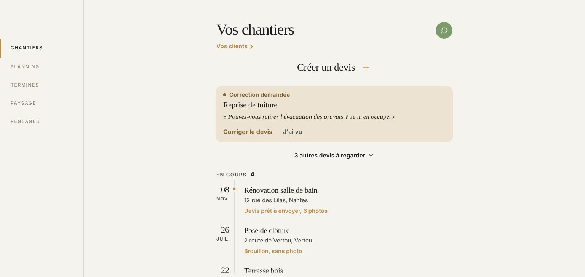

Sur ordinateur, la largeur
Vos vrais écrans, à la taille de votre portable. Seule la largeur de la colonne change. Le téléphone ne bouge pas.
Écran
Largeur

Ce que j’ai regardé sur ordinateur
- Tout s’étire, pas seulement les bandes. Les notifications, les lignes des listes, le bouton « Importer devis / facture », les deux actions de la fiche client. Le texte reste à gauche, la flèche part au bout de 1024 px.
- Le planning ne tient pas à l’écran. À 1024 px, chaque jour fait près de 150 px de haut : la fin du mois passe sous « 1 client sans date ». À 672 px, le mois entier se voit.
- 672 px, c’est la largeur du devis. La feuille du devis la porte déjà : toutes les pages auraient la même.
- Paysage : la liste dépasse le titre de 10 px de chaque côté. Petit décalage, sur téléphone aussi. À corriger à part si vous le voulez.
Votre choix : quelle largeur ? Un seul réglage la change pour toutes les pages, et tout ce qui sera modifié sur le téléphone suivra.